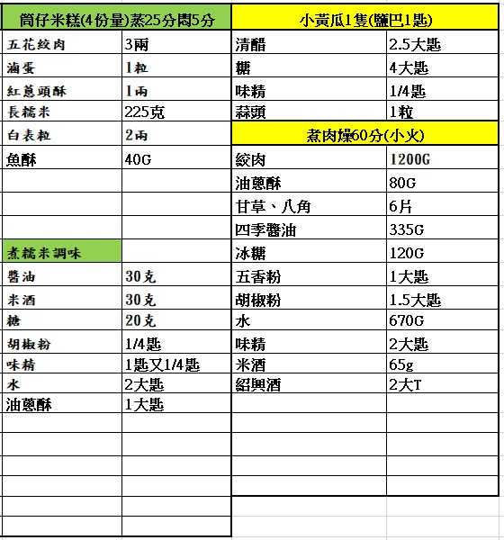
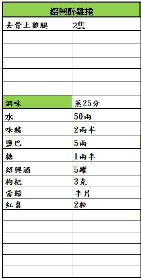
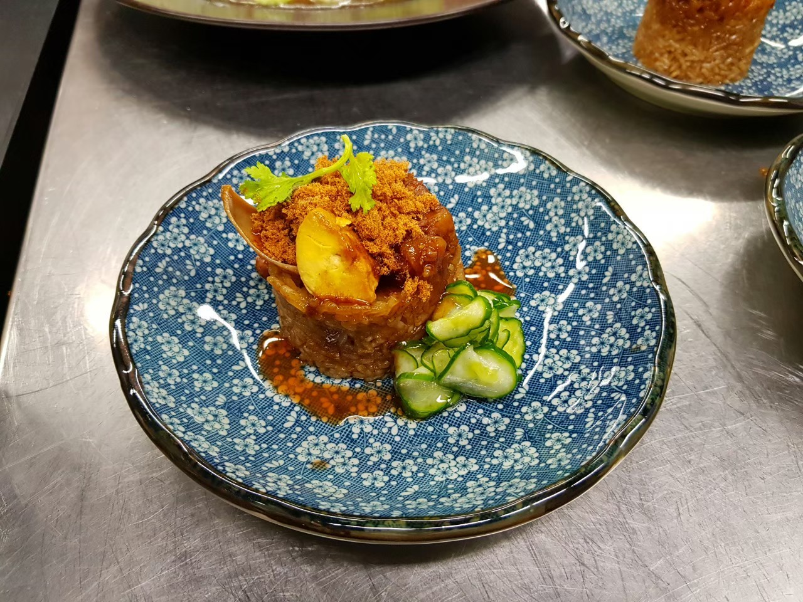

筒仔米糕
涼拌：小黃瓜切片鹽1t拌勻靜置30min蒜頭拍碎冰水沖掉鹽分水份瀝乾醋糖味精拌勻放蒜頭拌勻放小黃瓜拌勻滴香油
滷蛋1開4糯米洗淨泡水香菜取香菜葉泡水糯米水瀝乾水滾下糯米轉20圈
倒出潤鍋下豬油炒香炒金黃油渣撈出下醬油油蔥酥水調味下糯米拌勻倒出
模具中放滷蛋肉燥料糯米壓緊壓平蓋住大火蒸25min關火燜5min米糕扣出放上小黃瓜淋上醬汁撒上魚鬆

紹興醉雞捲
肉厚處劃刀保鮮膜包起來擠出空氣戳洞鋁箔紙包起來
蒸25min燜5min取出切對半放入醬汁中

| 成品照 | 菜名 | 作法 |
|---|---|---|
|  | 筒仔米糕 |
肉燥：五花肉切丁潤鍋下五花肉拌炒炒出油醬油嗆鍋下冰糖拌勻煮滾上色後加五香粉胡椒粉味精米酒紹興酒嗆鍋煮滾後加水煮滾加油蔥酥香料中小火燉煮50min~1hr 涼拌：小黃瓜切片鹽1t拌勻靜置30min蒜頭拍碎冰水沖掉鹽分水份瀝乾醋糖味精拌勻放蒜頭拌勻放小黃瓜拌勻滴香油 滷蛋1開4糯米洗淨泡水香菜取香菜葉泡水糯米水瀝乾水滾下糯米轉20圈 倒出潤鍋下豬油炒香炒金黃油渣撈出下醬油油蔥酥水調味下糯米拌勻倒出 模具中放滷蛋肉燥料糯米壓緊壓平蓋住大火蒸25min關火燜5min米糕扣出放上小黃瓜淋上醬汁撒上魚鬆 |
|
紹興醉雞捲 |
水加味精鹽糖煮滾加藥材關火放涼冷卻下紹興酒順時鐘拌勻 肉厚處劃刀保鮮膜包起來擠出空氣戳洞鋁箔紙包起來 蒸25min燜5min取出切對半放入醬汁中 |